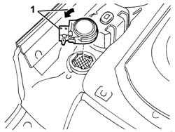
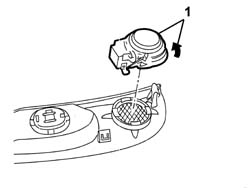

5570T94 rear tweeter (one), lh or rh - r r
- Path
- Procedures > 55 ELECTRICAL EQUIPMENT > 5570 ACCESSORIES > 5570T car radio and car telephone > 5570T94 rear tweeter (one), lh or rh - r r
- Kind
- repair procedure (removal / refitting; the operation number is the code)
- Applies to
- all engines; all production periods
- Interactive page
- https://sloeber94.github.io/elrnDB-a147/en/#/3025602
Applies to: all engines; all production periods; only with equipment: 3 porte
 Removing
Removing
 Refitting
RefittingWork with caution
7040L40 front compartment scuff strip - r r
7050A22 rear seat cushion - r+r
1. Rotate the tweeter in an anti-clockwise direction and remove it.

Applies to: all engines; all production periods; only with equipment: 3 porte
Refitting
RemovingCheck that the tweeter is not damaged.
Fit the tweeter in its housing.
7050A22 rear seat cushion - r+r
7040L40 front compartment scuff strip - r r
Check the operation of the tweeter.
Applies to: all engines; all production periods; only with equipment: 5 porte
Removing
RefittingWork with caution
7010C44 interior handle panel - r r
1. Rotate the tweeter in an anti-clockwise direction and remove it.

Applies to: all engines; all production periods; only with equipment: 5 porte
Refitting
RemovingCheck that the tweeter is not damaged.
Fit the tweeter.
7010C44 interior handle panel - r r
Check the operation of the tweeter.
Topics linked from this page (4)
- 7010C44 interior handle panel - r r
- 7040H50 rear panel - r r
- 7040L40 front compartment scuff strip - r r
- 7050A22 rear seat cushion - r+r